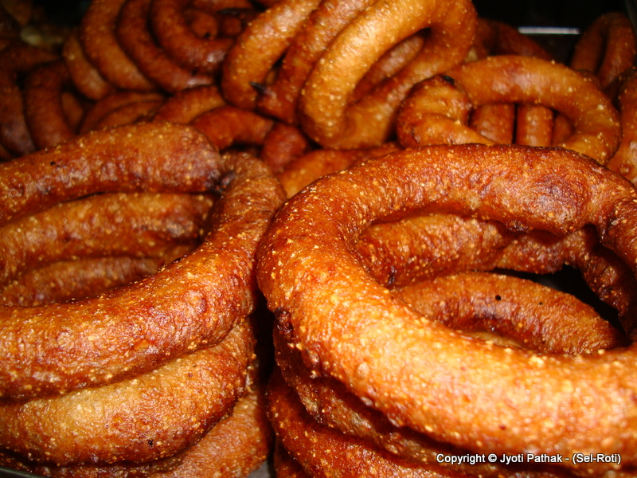
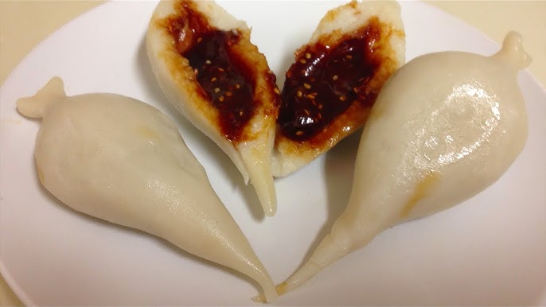

Foods of Nepal
Momo

Momo is one of the most popular street foods in Nepal. These steamed dumplings are filled with meat (often chicken or buff) or vegetables and served with a spicy dipping sauce. It is a must-try for anyone visiting Nepal and is enjoyed as a snack or meal.
Ingredients:
- Flour (for dough)
- Ground meat or vegetables
- Ginger, garlic, onions, and spices
- Soy sauce
Selroti
Selroti is a traditional sweet rice doughnut that is crispy on the outside and soft on the inside. It is typically prepared during festivals like Dashain and Tihar. It is made from rice flour, sugar, and ghee, and is deep-fried to perfection.
Ingredients:
- Rice flour
- Sugar
- Ghee (clarified butter)
- Cardamom
Yomari
Yomari is a traditional Newar food that is steamed and shaped like a fish. The dough is filled with a mixture of jaggery and sesame seeds or chocolate. Yomari is enjoyed during festivals such as Yomari Punhi.
Ingredients:
- Rice flour
- Jaggery (sweetener)
- Sesame seeds
- Chocolate (optional)